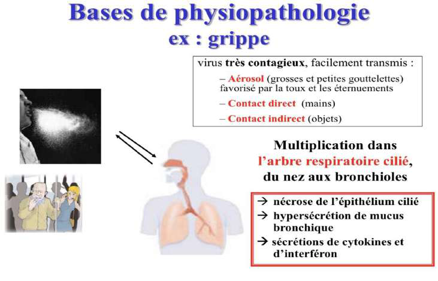
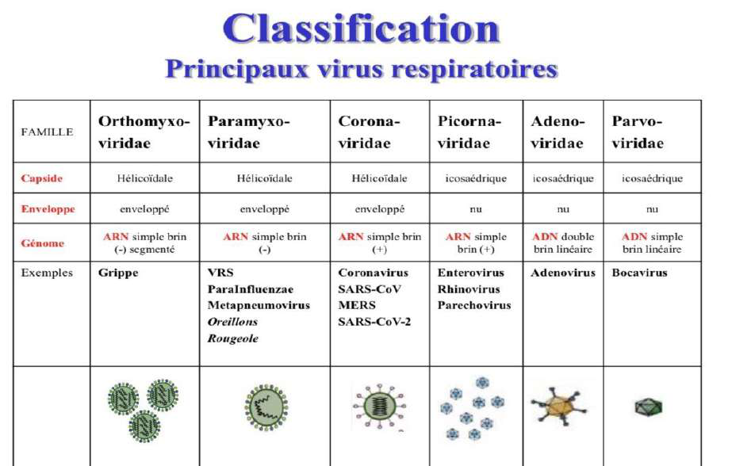
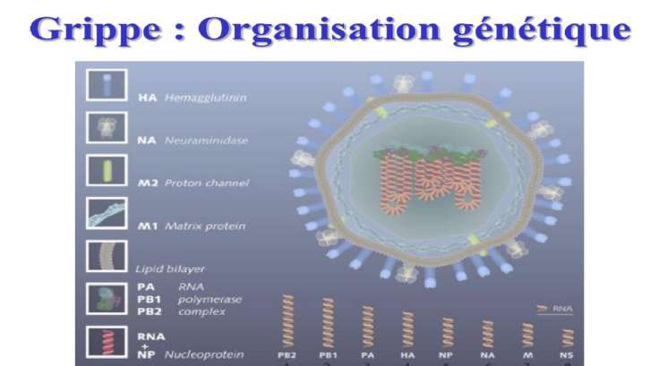
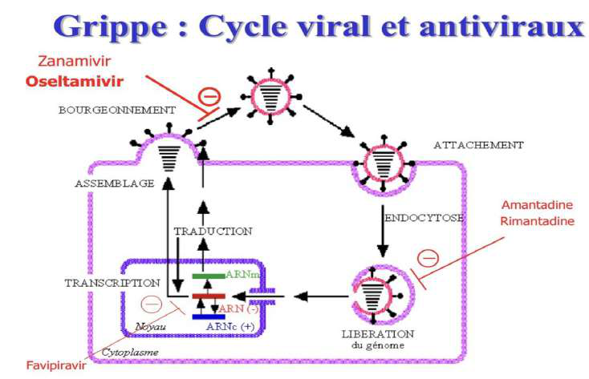
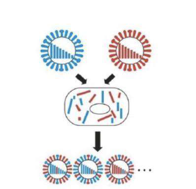
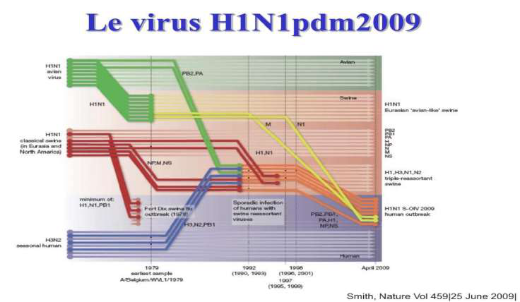
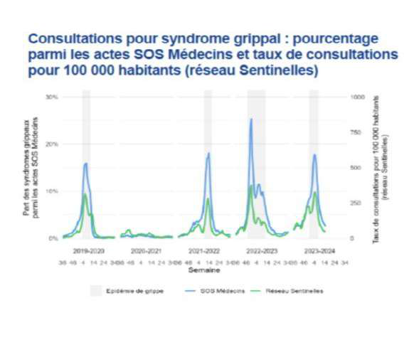
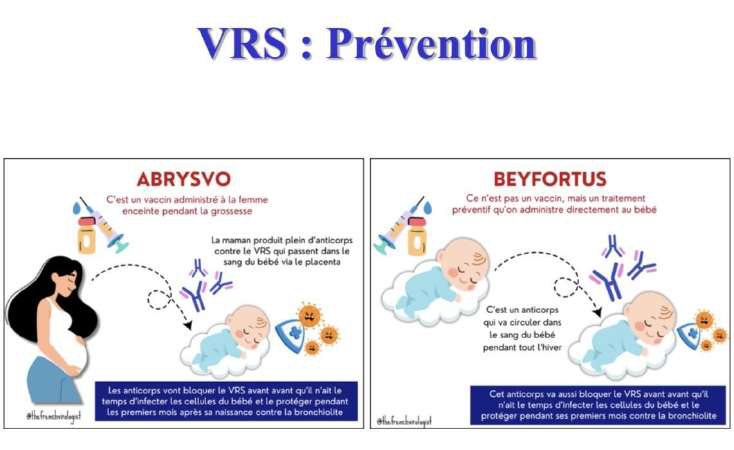

Physiopathologie (ex. grippe) — multiplication dans l'épithélium respiratoire haut puis descente possible vers les voies basses ; transmission par gouttelettes et contact (direct/indirect). Infection localisée = contagiosité par voie respiratoire, incubation courte.
3 · Cinétique & surinfection bactérienne
Virus cytolytiques : multiplication → nécrose de l'épithélium (explique une partie des symptômes).
Sécrétion de mucus (élimination + protection) → milieu nutritif pour les bactéries résidentes → risque de surinfection bactérienne secondaire.
Réponse immunitaire (cytokines, interférons) → certains sujets fragiles font une insuffisance respiratoire due à la grippe elle-même (≠ surinfection).
Cinétique en 3 issues possibles : ① rhinite (mucus seul) → ② grippe virale (signes cliniques) → ③ surinfection bactérienne (réascension secondaire).

Cinétique de la grippe — la multiplication virale nécrose l'épithélium ; le mucus protège mais nourrit les bactéries → surinfection bactérienne possible dans un 2e temps (réascension des symptômes, expectorations).
Partie 2 · Classification
4 · Les principaux virus respiratoires
📌 Tableau à connaître (la prof insiste surtout sur la 1re colonne = les familles).

Classification des virus respiratoires — à organiser par famille : Orthomyxoviridae (grippe — ARN sb (−) segmenté, enveloppé), Paramyxoviridae (VRS, parainfluenza), Pneumoviridae (métapneumovirus), Coronaviridae (ARN sb (+)), Picornaviridae (rhinovirus), Adenoviridae… La plupart sont des virus à ARN enveloppés.
Neuraminidase (NA / N) : libération des virions (bourgeonnement) = cible de l'oseltamivir.
Capside hélicoïdale ; génome ARN simple brin négatif, segmenté (en général 8 segments = 8 gènes).

Structure du virus grippal — enveloppe hérissée d'HA et de NA, capside hélicoïdale, génome ARN sb (−) en 8 segments. Le caractère segmenté est la clé : il permet les réassortiments (cassure antigénique, cf. §7).
6 · Cycle viral
Cycle en 4 étapes : ① Entrée (HA reconnaît l'acide sialique → endocytose) → ② Décapsidation → ③ Réplication & assemblage (ARN-polymérase ARN-dépendante sans relecture → mutations) → ④ Bourgeonnement (la NA clive l'acide sialique pour libérer les virions).

Cycle viral de la grippe — entrée via l'HA (fixation à l'acide sialique) → décapsidation → réplication/assemblage → bourgeonnement dépendant de la NA (clive l'acide sialique pour libérer les virions). La NA est la cible de l'oseltamivir (cf. §10).
7 · Variabilité génétique : dérive vs cassure
Dérive (glissement) antigénique
Cassure (saut) antigénique
Mécanisme
Mutations ponctuelles (polymérase ARN sans relecture) accumulées à chaque réplication
Réassortiment de segments lors d'une co-infection (génome segmenté)
Conséquence
Le même sous-type évolue (ex. H1N1 qui « fait le tour du globe ») → épidémies saisonnières annuelles
Nouveau sous-type (ex. H1N1 → H2N2 → H1N2…) jamais rencontré → risque de PANDÉMIE
À retenir
Tous les virus à ARN ; justifie de revacciner chaque année
Spécifique des virus segmentés (≠ recombinaison/crossing-over du VIH)

Cassure (saut) antigénique — co-infection d'une cellule par 2 sous-types (bleu + rouge) → le nouveau virion réassortit librement les 8 segments → sous-type inédit (risque pandémique). Spécifique des virus segmentés. (La dérive, elle = mutations ponctuelles progressives, sans réassortiment.) Combinaisons H × N possibles : 198.
8 · Pandémies (2009, menace H5N1)
H1N1pdm 2009 : émergé au Mexique (avril 2009) après ~30–40 ans de réassortiments humain/porcin/aviaire → nouveau H1N1 assez distant pour échapper à l'immunité populationnelle. Bien transmissible mais peu pathogène ; depuis, saisonnalisé (épidémies de plus en plus modérées grâce à l'immunité de population).
Grippe espagnole (1918) = H1N1 (séquencé sur des corps gelés) ; diffusion favorisée par la fin de la 1re guerre + populations fragilisées.
H5N1 (aviaire) : très virulent (létalité ~50 %) mais mal adapté à l'homme (peu transmissible) → crainte d'un réassortiment H5N1 × H1N1 rendant un virus à la fois virulent ET transmissible (→ « plans blancs » des années 2000).

H1N1pdm 2009 — issu de réassortiments successifs (lignées humaine, porcine, aviaire) entrecoupés de phases de dérive (« ce n'est pas parce qu'il saute qu'il arrête de glisser »). Les vaccins préparés contre le H5N1 ont servi à juguler la pandémie.
9 · Clinique, épidémiologie & diagnostic
Clinique : 10–30 % de formes symptomatiques ; syndrome grippal (fièvre, myalgies, toux). Formes graves chez les sujets fragiles.
Épidémiologie France : épidémie hivernale de 8–9 semaines, ~1,2–1,5 million de consultations pour syndrome grippal ; surveillance multi-sources (réseau Sentinelles, urgences, réa, PCR). Couverture vaccinale ≈ 47 % chez les sujets à risque.
Diagnostic : PCR sur prélèvement respiratoire (souvent PCR triplex Grippe–VRS–COVID ou multiplex) ; rarement nécessaire en ville.

Épidémiologie de la grippe — courbe des consultations pour syndrome grippal (réseau Sentinelles) : épidémie hivernale annuelle ; ce qui varie = date de début, nombre de pics, sous-type(s) circulant(s).
10 · Antiviraux & vaccins
Antiviraux
Oseltamivir = inhibiteur de neuraminidase (bloque le bourgeonnement) — seul utilisé en France.
Indications : terrain fragile / forme grave, à débuter dans les 48 h ; aussi en prophylaxie post-exposition.
+ symptomatique (paracétamol), isolement gouttelettes ; antibiotiques seulement si surinfection.
Vaccins
Inactivés, injectables, multivalents (tri/quadrivalent, réactualisés chaque année).
Protection 40–80 % ; but = éviter les formes graves chez les fragiles.
Indications : > 65 ans, pathologies chroniques, femmes enceintes, professionnels de santé.
Piège : à refaire chaque année (dérive antigénique → souche vaccinale parfois décalée).
💊 Cible antivirale = la neuraminidase (cf. figure du cycle viral, §6) : l'oseltamivir bloque la libération des virions.
Partie 4 · Autres virus respiratoires
11 · Paramyxoviridae (VRS) & métapneumovirus
Caractéristiques communes (vs grippe)
Même physiopathologie ; transmission respiratoire directe ou manuportée, contagiosité ++, fluctuations saisonnières.
Virus sphérique enveloppé, nucléocapside hélicoïdale, génome ARN sb (−) NON segmenté → pas de réassortiment (donc pas de cassure antigénique), mais dérive possible.
VRS (virus respiratoire syncytial) = la bronchiolite du nourrisson ; 2 types (A/B, clinique identique) ; épidémie automne/hiver, plus précoce que la grippe. Touche surtout les âges extrêmes (nourrissons, sujets âgés/fragiles).
Virus parainfluenza : laryngites, infections respiratoires de l'enfant.
Métapneumovirus (Pneumoviridae, proche du VRS) : broncho-alvéolites de l'enfant (~10 % des pneumopathies), pneumonies chez BPCO/asthmatique/immunodéprimé. Diagnostic RT-PCR.

VRS / Paramyxoviridae — 2 sous-familles (Paramyxovirinae, Pneumovirinae) ; le VRS = principale cause de bronchiolite du nourrisson. Génome non segmenté → pas de cassure antigénique. Prévention : hygiène + vaccination ciblée.
12 · Coronaviridae
Virus enveloppé à larges spicules (aspect « en couronne »), génome ARN simple brin positif, très grand (~30 kb) ; grande diversité, nombreux réservoirs animaux.